Fushimi Inari Shrine (伏見稲荷大社, Fushimi Inari Taisha) is an important Shinto shrine in southern Kyoto. It's famous for its thousands of torii gates, which straddle a network of trails behind its main buildings. The trails lead into the wooded forest of the sacred Mount Inari, which stands at 233 meters and belongs to the shrine grounds.
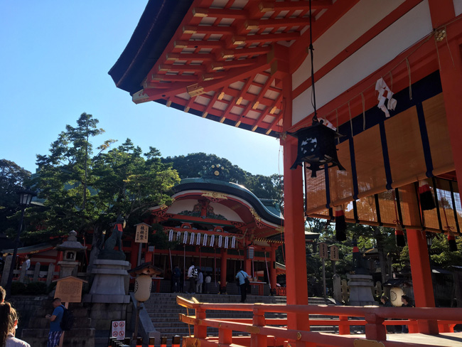Fushimi Inari is the most important of several thousands of shrines dedicated to Inari, the Shinto god of rice. Foxes are thought to be Inari's messengers, resulting in many fox statues across the shrine grounds. Fushimi Inari Shrine has ancient origins, predating the capital's move to Kyoto in 794.
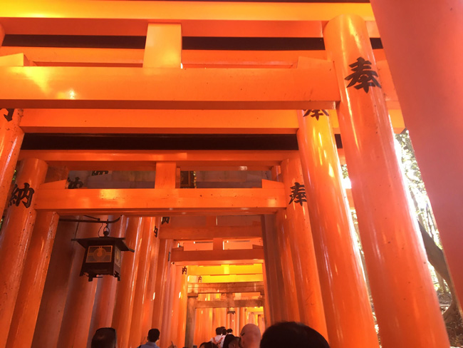There are around 10,000 torii gates that lead up to the top of Mount Inari. There are lookouts along the way and you can see over the city of Kyoto.
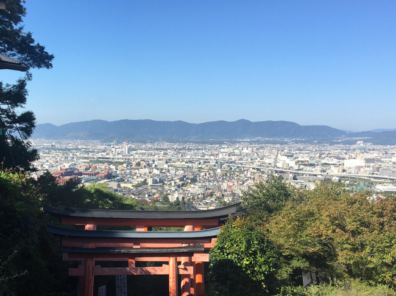Above is a photo of the view from halfway up Mount Inari
Horyuji Temple (法隆寺, Hōryūji) was founded in 607 by Prince Shotoku, who is credited with the early promotion of Buddhism in Japan. Horyuji is one of the country's oldest temples and contains the world's oldest surviving wooden structures. It was designated a world heritage site in 1993. Horyuji's temple grounds are spacious and separated into two main precincts, the Western Precinct (Saiin Garan) and the Eastern Precinct (Toin Garan).
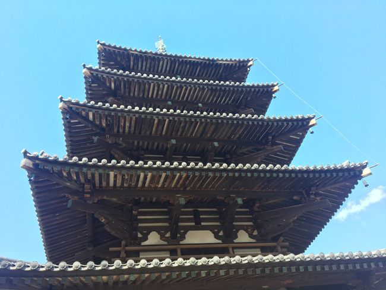The pagoda in Horyuji Temple is considered the oldest wooden structure in the world. It was built during the reign of Prince Shotoku
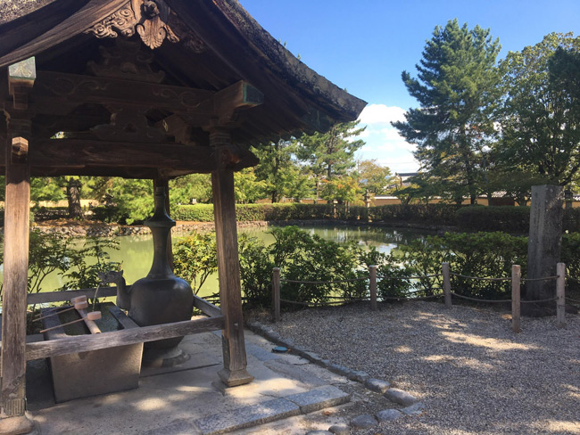Kasuga Taisha (春日大社) is Nara's most celebrated shrine. It was established at the same time as the capital and is dedicated to the deity responsible for the protection of the city. Kasuga Taisha was also the tutelary shrine of the Fujiwara, Japan's most powerful family clan during most of the Nara and Heian Periods. Like the Ise Shrines, Kasuga Taisha had been periodically rebuilt every 20 years for many centuries. In the case of Kasuga Taisha, however, the custom was discontinued at the end of the Edo Period.
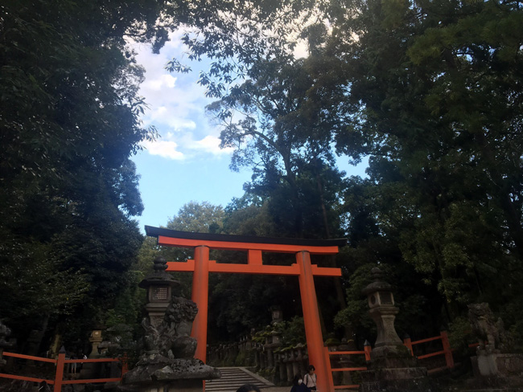Above is a photo of the torii gate at the entrance of Kasuga Taisha
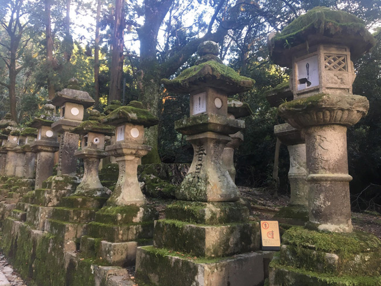Kasuga Taisha is famous for its lanterns, which have been donated by worshipers. Hundreds of bronze lanterns can be found hanging from the buildings, while as many stone lanterns line its approaches. The lanterns are only lit twice a year during two Lantern Festivals, one in early February and one in mid August.
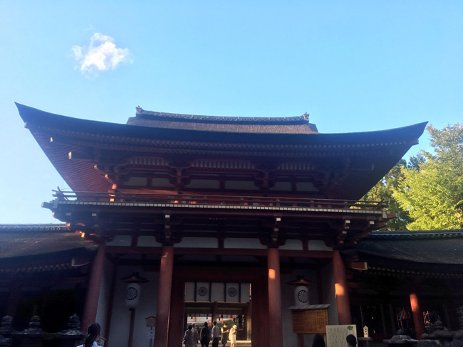Kinkakuji (金閣寺, Golden Pavilion) is a Zen temple in northern Kyoto whose top two floors are completely covered in gold leaf. Formally known as Rokuonji, the temple was the retirement villa of the shogun Ashikaga Yoshimitsu, and according to his will it became a Zen temple of the Rinzai sect after his death in 1408. Kinkakuji was the inspiration for the similarly named Ginkakuji (Silver Pavilion), built by Yoshimitsu's grandson, Ashikaga Yoshimasa, on the other side of the city a few decades later.
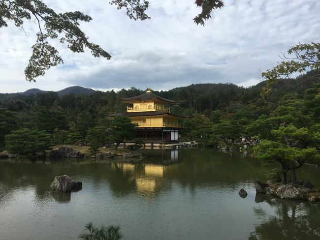Kinkakuji is an impressive structure built overlooking a large pond, and is the only building left of Yoshimitsu's former retirement complex. It has burned down numerous times throughout its history including twice during the Onin War, a civil war that destroyed much of Kyoto; and once again more recently in 1950 when it was set on fire by a fanatic monk. The present structure was rebuilt in 1955.
Kiyomizudera (清水寺, literally "Pure Water Temple") is one of the most celebrated temples of Japan. It was founded in 780 on the site of the Otowa Waterfall in the wooded hills east of Kyoto, and derives its name from the fall's pure waters. The temple was originally associated with the Hosso sect, one of the oldest schools within Japanese Buddhism, but formed its own Kita Hosso sect in 1965. In 1994, the temple was added to the list of UNESCO world heritage sites.
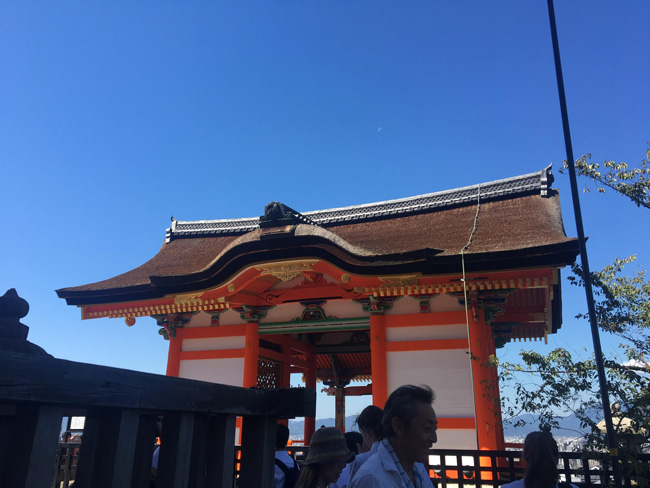Part of the fun of visiting Kiyomizudera is the approach to the temple along the steep and busy lanes of the atmospheric Higashiyama District. The many shops and restaurants in the area have been catering to tourists and pilgrims for centuries, and products on sale range from local specialties such as Kiyomizu-yaki pottery, sweets and pickles to the standard set of souvenirs.
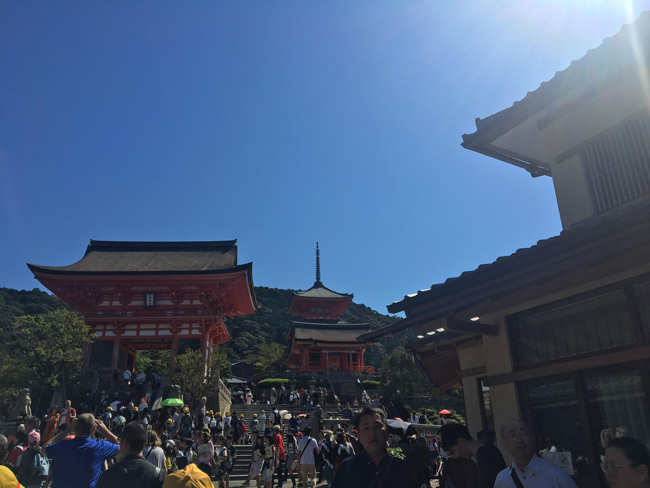Tenryuji (天龍寺, Tenryūji) is the most important temple in Kyoto's Arashiyama district. It was ranked first among the city's five great Zen temples, and is now registered as a world heritage site. Tenryuji is the head temple of its own school within the Rinzai Zen sect of Japanese Buddhism. Tenryuji was built in 1339 by the ruling shogun Ashikaga Takauji. Takauji dedicated the temple to Emperor Go-Daigo, who had just passed away. The two important historic figures used to be allies until Takauji turned against the emperor in a struggle for supremacy over Japan. By building the temple, Takauji intended to appease the former emperor's spirits.

Tenryuji's buildings, were repeatedly lost in fires and wars over the centuries, and most of the current halls, including the main hall (Hojo), drawing hall (Shoin) and temple kitchen (Kuri) with its distinctive small tower, date from the relatively recent Meiji Period (1868-1912). Unlike the temple buildings, Tenryuji's garden survived the centuries in its original form. Created by the famous garden designer Muso Soseki, who also designed the gardens of Kokedera and other important temples, the beautiful landscape garden features a central pond surrounded by rocks, pine trees and the forested Arashiyama mountains. Muso Soseki also served as Tenryuji's first head priest.
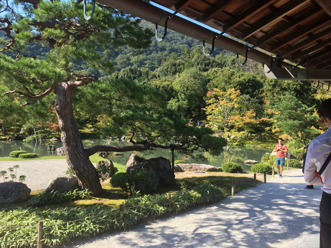Todaiji (東大寺, Tōdaiji, "Great Eastern Temple") is one of Japan's most famous and historically significant temples and a landmark of Nara. The temple was constructed in 752 as the head temple of all provincial Buddhist temples of Japan and grew so powerful that the capital was moved from Nara to Nagaoka in 784 in order to lower the temple's influence on government affairs.
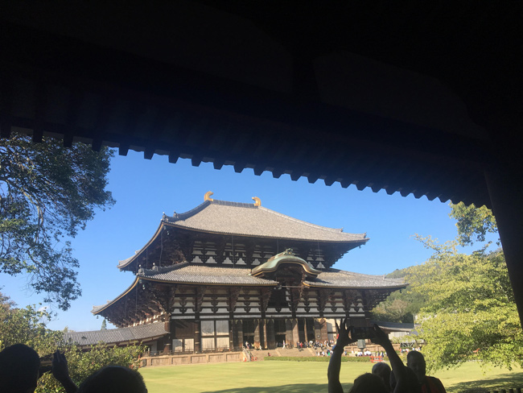Until recently, Todaiji's main hall, the Daibutsuden (Big Buddha Hall), held the record as the world's largest wooden building, despite the fact that the present reconstruction of 1692 is only two thirds of the original temple hall's size. The massive building houses one of Japan's largest bronze statues of Buddha (Daibutsu). The 15 meters tall, seated Buddha represents Vairocana and is flanked by two Bodhisattvas.
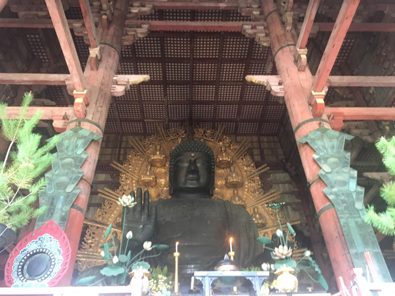